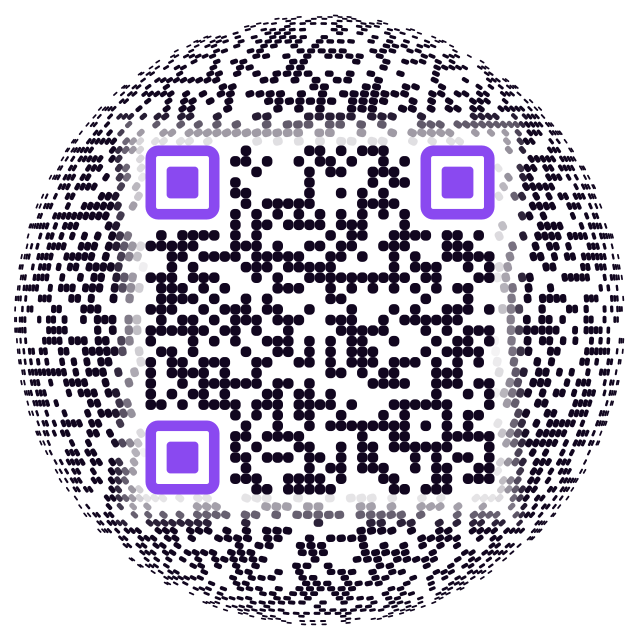
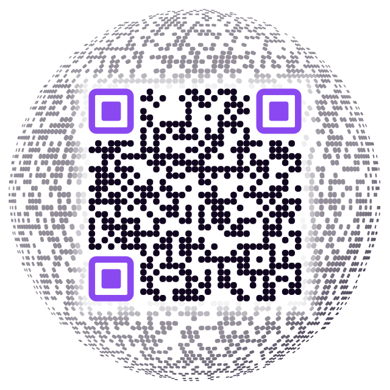
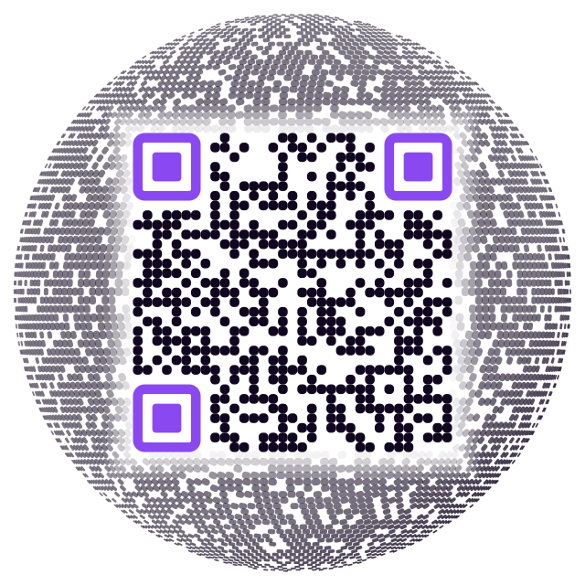
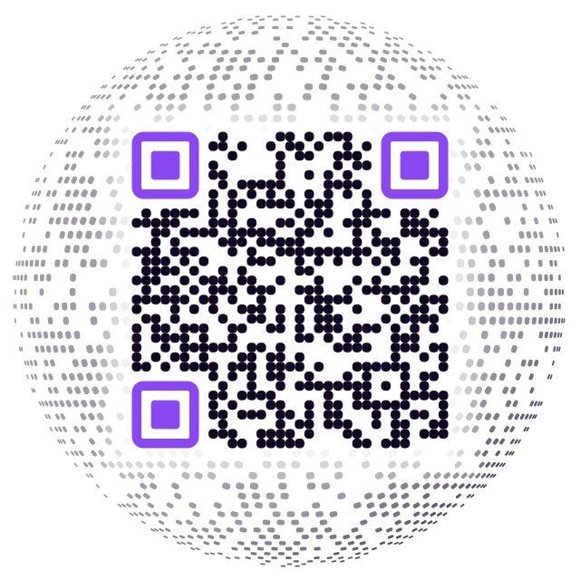
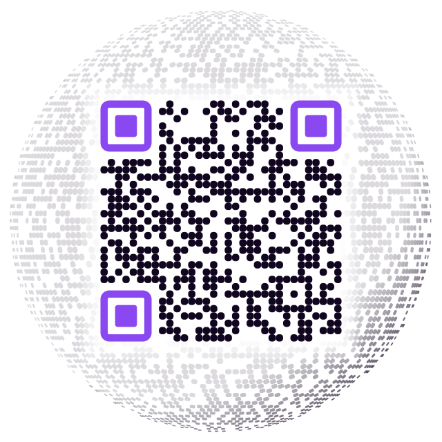
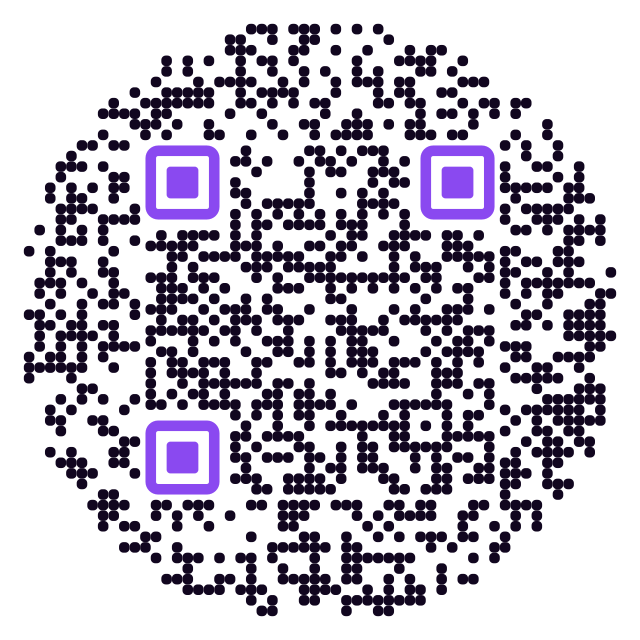

Zero gap between the code and the sphere. Modules run right up to the edge of the real code — no white ring, no seam.
Each one points at the Void's Horizon page, so a working scan lands you back on the store links. The score is how many of six conditions each survived with OpenCV: pristine, far, 18° off-axis, blurred, and two combinations. Your phone is more forgiving than that, so treat the score as a ranking rather than a verdict — the only test that counts is yours.
All are a real square QR with the surrounding field laid on a sphere's latitude/longitude grid and projected orthographically: rows curve, columns converge at the poles, and modules crowd and foreshorten toward the rim the way a globe's surface does.





The flat no-gap code you said scans every time, for comparison against the spheres.

A hard edge at zero gap does not decode on the spheres. The globe's rows sit at a different pitch from the code's own grid, so where the two meet, module sampling loses the code's boundary — the flat version never had that problem because its decoration sits on the same grid, reading as a continuation. The fix keeps modules present right up to the edge but ramps their opacity down over the last three modules. No gap to look at; low contrast to scan against. Anything less than three modules of ramp failed.